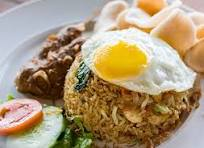

Home
Fried Rice

Fried Rice is a popular dish made by stir-frying cooked rice with ingredients such as vegetables, eggs, meat, and seasonings. It originated in China and later spread across many countries in Asia, where different regions created their own variations. The dish is known for its savory flavor, quick cooking process, and ability to use leftover rice and ingredients. Fried rice typically includes rice cooked in a hot pan or wok with oil, garlic, eggs, vegetables like carrots and peas, and seasonings such as soy sauce, giving it a rich aroma and slightly smoky taste. Because it is easy to customize, fried rice can be made vegetarian or with proteins like chicken, shrimp, or beef.
Ingredients
- 2 cups cooked rice (preferably cold or day-old)
- 2 tablespoons cooking oil
- 2 eggs
- 2 cloves garlic, minced
- ½ cup cooked chicken, shrimp, or beef (optional)
- 2-3 tablespoons soy sauce
- Salt and pepper to taste
How to Cook
- Prepare the ingredients: Use cooked rice that has been cooled (day-old rice works best). Chop vegetables such as carrots, green onions, and peas, beat one or two eggs in a small bowl, and prepare any protein like diced chicken or shrimp.
- Heat the pan: Place a wok or frying pan on medium-high heat and add a small amount of cooking oil. Let the oil heat for a few seconds so the ingredients will cook quickly.
- Cook the eggs: Pour the beaten eggs into the hot pan and scramble them gently until fully cooked, then move them to the side of the pan or remove them temporarily.
- Stir-fry vegetables and protein: Add a little more oil if needed, then cook garlic, vegetables, and protein in the pan while stirring constantly until they are tender and fragrant.
- Add the rice and seasoning: Add the cooked rice to the pan and break up any clumps. Stir-fry everything together while adding soy sauce and other seasonings such as salt or pepper.
- Serve: Remove the burrito from the pan, cut it in half if desired, and serve it warm with extra toppings like salsa, guacamole, or sour cream. 🌯